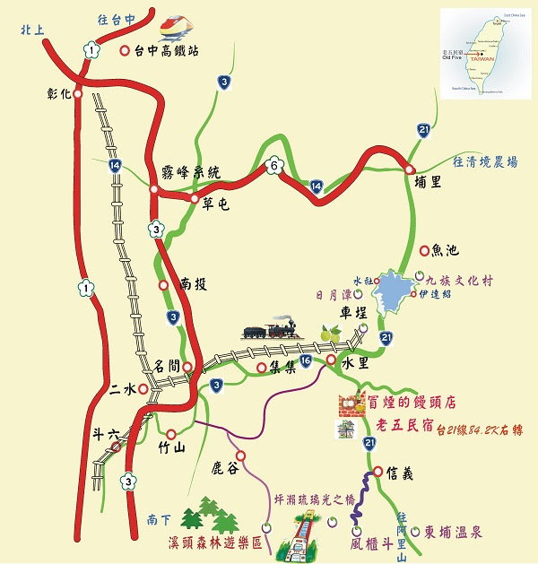

走國道3號，由名間交流道下，左轉省道接台16線，往玉山國家公園方向直行，經集集、水里，續接省道台21線往信義及玉山國家公園方向前行，於83.8K處看到紫色水里梅鄉前右轉，順指標再行500公尺即達。
搭乘台鐵：搭至二水火車站，轉搭集集支線至水里火車站下車。
搭乘高鐵：搭至高鐵台中站，轉乘台鐵新烏日火車站至二水火車站，轉搭集集支線至水里火車站下車。
搭乘客運：台中火車站旁總達客運（往水里），至水里火車站下車。
抵達水里火車站後，可於站前轉搭員林客運（往信義或東埔）之班車在安村站下車，我們將至公車站接您